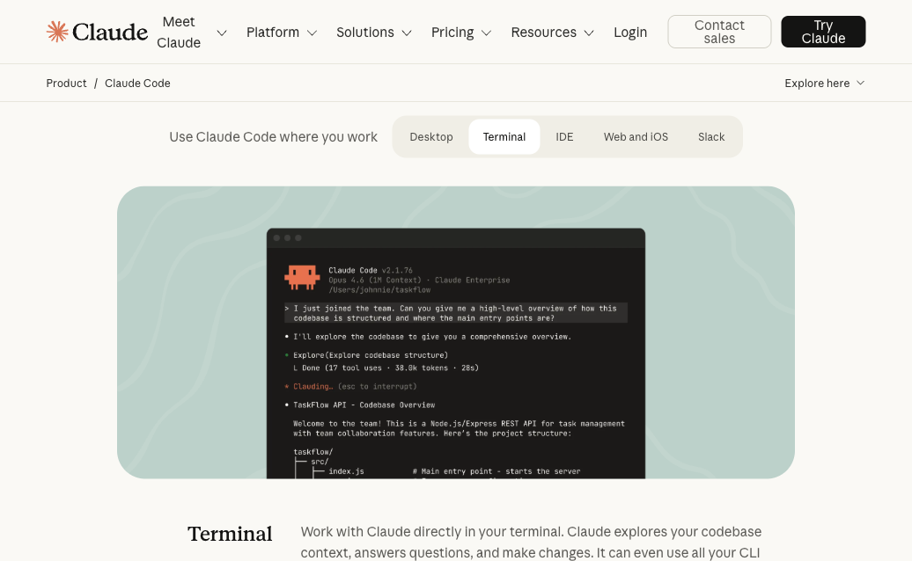
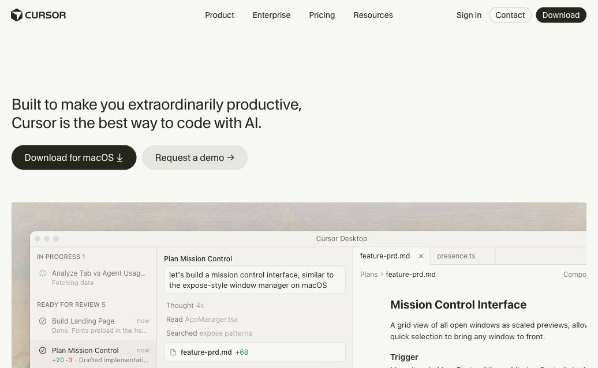

Entenda, instale e construa seu primeiro site com IA — ao vivo.
Contexto
A família de IAs, Claude e o que você vai precisar
Claude Code
O que é, como instalar e como usar
Cursor
O editor com IA e como usar junto com o Claude Code
Prática
Construir o site da PLAYMIX juntos
LLM é o cérebro. ChatGPT, Gemini, Claude — são todos LLMs. Modelos de IA que conversam, entendem e criam.
Anthropic
O que usamos hoje
OpenAI
ChatGPT, o mais conhecido
Google
Integrado ao Google
São todos LLMs. Concorrentes entre si. Claude é o que vamos usar.
claude.ai
O chat. Conversa, textos, análise de documentos. Como o ChatGPT, mas da Anthropic.
Para times
Colaboração com IA para equipes. Projetos, orçamentos, organização — útil no dia a dia.
O foco da aula
Assistente de IA que cria software. Lê seus arquivos, escreve código, roda comandos e entrega funcionando.
Não precisa saber programar.
Precisa saber pedir.
Mac (de 2017 em diante) ou Windows 10/11
Qualquer computador relativamente recente serve
Internet
O Claude Code funciona online — precisa estar conectado
Conta Claude Pro — $20/mês (aprox. R$110)
Inclui o Claude Code + Cowork. O plano gratuito NÃO inclui o Code.
claude.ai — crie sua conta ali
Node.js (gratuito) — necessário para a prática
É o motor que roda projetos web no seu computador. Instale em:
nodejs.org — baixe a versão LTS e instale normalmente
Cursor (gratuito)
O editor visual com IA. Plano Hobby = grátis. Pro = $20/mês.
cursor.com — baixe aqui
Vamos fazer tudo juntos na aula. Pode só acompanhar agora e instalar depois.
É a tela preta onde você digita comandos para o computador. Todo Mac e Windows já tem um.
No Mac: Cmd + Espaço → digite "Terminal" → Enter
No Windows: Tecla Windows → digite "PowerShell" → Enter
Um assistente de IA que roda no seu terminal. Você descreve o que quer em português e ele cria o projeto inteiro.
Conversa natural — "Crie um site de portfólio dark"
Autônomo — planeja, escreve, testa e corrige sozinho

Vai aparecer texto rodando na tela. É normal. Espere até pedir login.
Precisa de conta Claude Pro ($20/mês). O plano gratuito não inclui o Code.
Abre o navegador para login
Você faz login com sua conta Claude Pro. Só precisa fazer isso uma vez.
Volta pro terminal automaticamente
Aparece um cursor piscando esperando seu pedido (= o "prompt").
Pronto para usar
Não precisa instalar mais nada. O instalador cuida de tudo.
| O que fazer | Como |
|---|---|
| Iniciar | claude |
| Continuar conversa anterior | claude -c |
| Tarefa rápida sem entrar no chat | claude "corrija o bug do menu" |
| Ver ajuda | /help |
| Sair | exit ou Ctrl+D |
Criar site portfólio
"Crie um site para minha produtora"
Montar página de orçamento
"Adicione um formulário de contato"
Publicar online
"Coloque esse site no ar"
Adicionar formulário de contato
"Quero que o cliente preencha nome, email e tipo de serviço"
Melhorar o que já existe
"O site tá lento, melhore a performance"
Corrigir problemas
"O menu não abre no celular, corrija"
Um editor de código com IA de fábrica. Você vê os arquivos, edita visualmente e a IA ajuda em tempo real.
Tab — autocomplete inteligente
Cmd+K — edição pontual ("mude a cor")
Modo autônomo — cria partes inteiras sozinho

cursor.com — clique Download
Funciona no Mac e no Windows
Instale e abra
Igual instalar qualquer app
Crie conta (Google ou email)
Plano Hobby = gratuito. Pro = $20/mês
Abra uma pasta de projeto
Cmd+L abre o chat com IA
Você conversa e a IA cria tudo do zero. Funciona no terminal.
Você vê os arquivos e edita visualmente. É o editor de código.
Claude Code cria, Cursor ajusta. Pode usar o Code sozinho no terminal OU dentro do Cursor.
O Claude Code funciona dentro do Cursor como plugin (= extensão que você instala dentro do editor). Melhor dos dois mundos.
Agentes são assistentes de IA especializados. Em vez de um genérico, você tem um time — cada um cuida de uma parte do projeto.
@dev
Escreve código
@architect
Planeja a estrutura
@qa
Testa qualidade
@pm
Gerencia o projeto
@analyst
Pesquisa e analisa
@devops
Publica e configura
Na prática de hoje, vamos usar esses agentes para construir o site da PLAYMIX.
LLM
É o cérebro. ChatGPT, Gemini, Claude — são todos LLMs. Modelos que conversam.
Skill
Uma habilidade específica que você ensina pra esse cérebro. Tipo dar um manual.
Agente
Quando o cérebro ganha mãos. Não só conversa — executa. Cria arquivos, roda código, faz coisas sozinho.
Squad
Quando você junta vários agentes trabalhando juntos. Um time de IAs especializadas.
Cada tecnologia serve pra um tipo de projeto. Você não precisa escolher — a IA escolhe pra você. Mas é bom saber o que existe.
HTML + CSS + JavaScript
O básico da web. Sites simples, páginas estáticas, portfólios. Abre direto no navegador.
→ Site simples, landing page
Next.js (React)
O padrão profissional. Sites dinâmicos, apps web, e-commerce. O que vamos usar hoje.
→ Site profissional, aplicativo web
React Native / Expo
Aplicativos para celular (iOS e Android) usando a mesma linguagem da web.
→ App para iPhone e Android
Swift / Kotlin
Apps nativos — Swift para iPhone, Kotlin para Android. Máxima performance.
→ App nativo de alta performance
Python
Automações, scripts, inteligência artificial, análise de dados. Não é pra sites.
→ Automação, IA, dados
Flutter
Apps para celular, desktop e web com uma única base de código. Do Google.
→ App multiplataforma
Cada squad é um time de IA especializado num domínio. Você aciona o squad certo e ele cuida de tudo.
Advisory Board
11 conselheiros estratégicos
Brand Squad
15 experts em branding
Copy Squad
23 copywriters lendários
Storytelling
12 mestres de narrativa
Hormozi Squad
16 agentes — ofertas e scaling
Traffic Masters
16 especialistas em tráfego
Cybersecurity
15 pentest e segurança
Design Squad
8 design systems e UX
Data Squad
7 analytics e growth
C-Level Squad
6 executivos virtuais
Claude Code Mastery
8 experts em Claude Code
Movement
7 construção de movimentos
Content Distillery
9 destilação de conteúdo
Kaizen
7 melhoria contínua
Marketing Ops
12 operações de marketing
Design (MD LLM)
10 design com IA
Antes de começar a prática — pergunte qualquer coisa.
Produtora audiovisual — portfólio profissional completo
Portfólio
Galeria de vídeos e imagens
Orçamento
Formulário de contato
Serviços
Filmagem, edição, drone
"Crie um cabeçalho escuro com logo à esquerda"
"Use a paleta de cores do site X como referência"
"Primeiro faça a tela inicial, depois a galeria"
"O menu não abre no celular, corrija"
"Faz um site bonito" — bonito como?
"Melhora isso" — melhorar o que?
"Faz tudo de uma vez" — confunde a IA
Aceitar sem testar no celular
Vou compartilhar minha tela agora.
Abram o Cursor ou o Terminal no computador de vocês.
"Rode o site no navegador" — ele executa npm run dev e abre automaticamente.
No terminal, digite npm run dev e abra localhost:3000 no navegador.
Gratuito. A Vercel é da mesma empresa que criou o Next.js.
Endereço personalizado (www.suaempresa.com) é opcional (~R$40/ano).
O Claude Code se conecta com essas plataformas. Você não precisa entender tudo agora — só saber que existem.
Vercel
Publica seu site na internet. Gratuito. Da mesma empresa do Next.js.
Supabase
Banco de dados e login de usuários. Guarda as informações do seu site.
GitHub
Salva o histórico do seu projeto na nuvem. Como um Google Drive para código.
Cloudflare
Protege e acelera seu site. Domínio, SSL e segurança.
A família de IAs
Claude, GPT, Gemini — os 3 produtos da Anthropic e onde o Code se encaixa
Claude Code
Instalou, rodou o primeiro comando e viu ele criar um projeto inteiro
Cursor
O editor visual com IA, os 3 níveis (Tab, Cmd+K, modo autônomo) e como usar com o Code
Prática
Construiu um site profissional do zero usando IA e publicou online
Refaça o site da aula com a sua marca — melhor exercício possível
Peça: "analise este projeto" em qualquer pasta do seu computador
Crie uma calculadora de orçamento para seus clientes
Documentação: code.claude.com/docs · cursor.com/docs